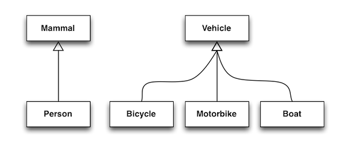
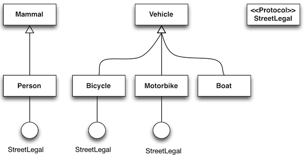

Table of Contents
Objective-C is single rooted class inheritance. But that does not mean you cannot do multiple inheritance. You can make different objects respond to a method or a set of methods even if these objects are not related by inheritance.
Lets’s consider a simple use case. See the two groups of classes in the diagram below.

The way the classes are organized at the moment, it is quite difficult to imagine that they can descend from a common class, although that is definitely doable.
We would have an interesting problem if we wanted some of these classes to respond to some methods like turnRight, turnLeft, stop and go. You might recognize those methods as activities you can do, and quite expected to do, on the street. Collectively, let’s call this group of methods StreetLegal.
We now need to decide whether we should re-arrange our class hierarchy so that some classes like Person, Bicycle and Motorbike would descend from the StreetLegal class so that they can respond to messages turnRight and turnLeft etc. But to do that would be too rigid and will seem a bit too contrived. Imagine that a person and bicycle descending from a common base class, that does not seem too natural. In situations like this, we can use Protocols

A protocol is a group of methods that may be implemented by classes that are not related by an inheritance hierarchy. In our example, we can make the Person, Bicycle and Motorbike classes implement the StreetLegal protocol even if they are not related by inheritance.
When a class implements a protocol, they are entering into some sort of a contract that they will respond to the messages promised by the protocol. That is just a roundabout way of saying that a class should implement all the methods written on the protocol. If you have worked with either Java or C# before, protocols are the equivalent of interfaces in those languages.
A protocol block is declared using the @protocol keyword. Unlike a class, a protocol contains only the signature of the methods. It does not have a corresponding implementation. The implementation of the protocol methods is left to the class that will implement a protocol.
@protocol StreetLegal -(void) turnLeft; -(void) turnRight; -(void) fullStop; @end